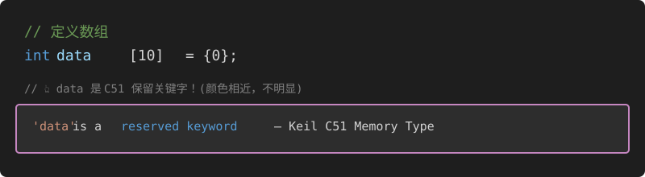
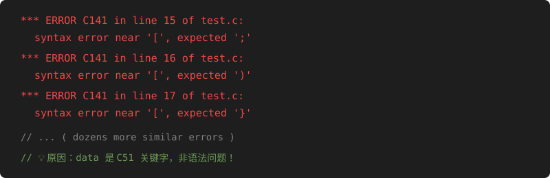
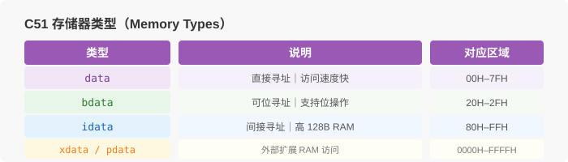
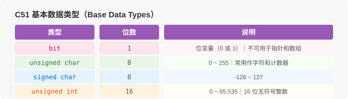

Debug
A Common Cause of Many "error C141" in Keil C51 That Passes Fine in Other Compilers
📅 2026-03
👤 Junzhe Lin
I wrote a bubble sort algorithm. It compiled fine in VC and other compilers, but went crazy with errors in Keil C51.
Besides basic issues like missing parentheses, one more likely cause is:
== Variable Name Collides with a C51 Keyword ==
For example, I used data, which is a C51 reserved keyword:

📷 Image: data as C51 keyword
（Original image from CSDN, please replace manually） '">
data is a C51 reserved keyword — the highlighting is not obvious and easy to miss
And I defined an array named data, which caused a bunch of error messages like this:

📷 Image: Keil C51 error output
（Original image from CSDN, please replace manually）'">
Lots of error C141: syntax error near '[', easily mistaken for syntax mistakes
Solution
Simply rename the array to something else.
I posted these screenshots just to show how unfairly subtle Keil's keyword highlighting is — that's why I didn't catch it at first…
This article is dedicated to the 2 hours I wasted on this QAQQAQ
Appendix: C51 Keyword Reference
Memory Types

📷 Image: C51 memory types
（Original image from CSDN, please replace manually）'">
Memory type can be omitted when declaring variables; C51 will use the default memory type based on the compilation model
Base Data Types

📷 Image: C51 base data types
（Original image from CSDN, please replace manually）'">
Overview of C51 supported base data types
Storage Classes
C51 variables have four storage classes:
- auto
- extern
- static
- register
Special Function Register — sfr
Used to declare the address of a Special Function Register (SFR) on the 8051.
Bit Variable — bit
Used to declare a bit variable that can only be 0 or 1.
Most of the keywords are fine, but data is really easy to use out of habit from other languages…